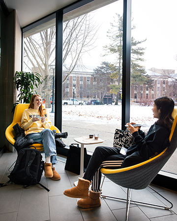

Need support? CAPS can help. Schedule an appointment today!
About CAPS
University Health & Counseling (UHS) supports the health and well-being of students by helping them thrive, manage stress, and build meaningful connections. UHC is comprised of Counseling and Psychological Services (CAPS), which offers counseling services, and University Health Service (UHS), which provides medical care. For medical services, students can visit the UHS website, while CAPS focuses on mental health support through multicultural and multi-disciplinary approaches. CAPS offers both in-person and virtual counseling to accommodate diverse student needs.
Located on the 4th floor of the Michigan Union, the CAPS Front Desk is open throughout the day to assist with questions and connect students to the appropriate services. Students can reach the office by phone at (734) 764-8312. CAPS also provides a limited number of private spaces for telecounseling sessions; more information is available through the Front Desk.
CAPS Services
Let's Talk:
- “Let's Talk” is a free program that supports students starting their mental health journeys. It provides casual meetings with counselors during specific drop-in times for initial support and advice
- Uwill is an addition to CAPS services that provides students with video, phone, chat, and message sessions with licensed mental health professionals at no cost
- Togetherall is an online, anonymous peer-support tool available for free to students. It is a clinically moderated, online peer-to-peer mental health community that reaches and empowers a diverse population of students to anonymously seek and provide support
Links:
To learn more about CAPS services or if you believe you can benefit from any of these services:
- Visit: CAPS website
- Make an appointment: CAPS appointment